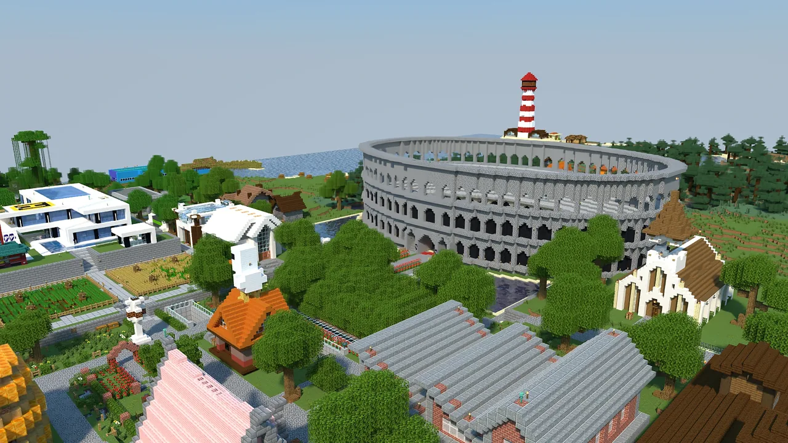
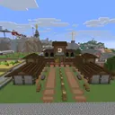
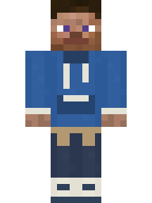
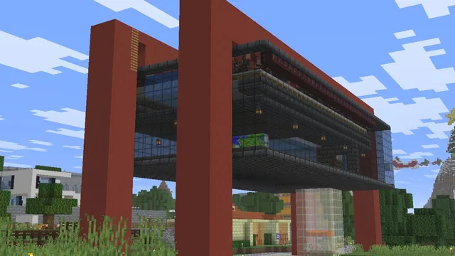
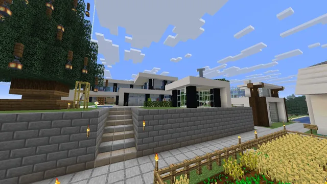
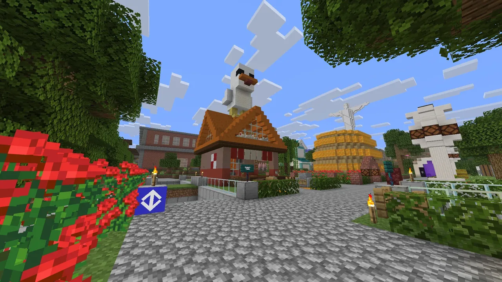

Instale e entre na sua conta.
O Manager roda no Windows. Você usa seu computador para hospedar o mundo e a mesma conta para administrar.
Ver download para Windows
Crie servidores com o Manager, encontre onde jogar e reúna os amigos no Community.
A plataforma é grátis para entrar.
O Manager faz parte da assinatura.

Força Aliada Manager
Crie ou importe o servidor, compartilhe o endereço e cuide de tudo em um só aplicativo.
Conhecer o ManagerIncluído no Pro, a partir de R$ 29,90/mês.O Manager roda no Windows. Você usa seu computador para hospedar o mundo e a mesma conta para administrar.
Ver download para WindowsComece do zero ou conecte um servidor existente. Você escolhe o caminho; o aplicativo reúne a configuração.
Java e BedrockCompartilhe o endereço protegido, programe backups e acompanhe pelo console, mesmo longe do computador.
Guia para começarInstale o Manager e conecte sua conta Força Aliada com Pro ou Team.
É uma demonstração. Nada é instalado ou criado no seu computador.
Escolha um caminho para experimentar.
Na criação real, você escolhe a edição e configura seu mundo.
Força Aliada Minecraft
Encontre servidores pelo seu estilo, salve os favoritos e dê uma cara nova ao seu personagem.
Explorar a plataformaVocê pode explorar o catálogo antes de criar uma conta.

Encontre uma skin, personalize no editor e compartilhe sua criação.
Abrir editor de skinsO caminho ficou pronto.
Agora só falta combinar a próxima partida.

Força Aliada Community
Poste suas ideias, acompanhe os amigos e converse pelo chat integrado. Dentro e fora do Minecraft.
Entrar no CommunitySeu perfil também tem personalidade.Pro e Team incluem selo, destaques e insights no Community.
É no nosso servidor que usamos as ferramentas que criamos.
Estas construções fazem parte desse mundo.
 Uma cidade inteira para explorar
Uma cidade inteira para explorar Os detalhes pelo caminho
Os detalhes pelo caminho
Inspiração que vira construção Um ponto de encontro
Um ponto de encontro
Espaço para o próximo projetoManager, personalização da página do servidor e benefícios no Community. Escolha o espaço para sua equipe.
Só quer jogar e encontrar sua turma?Explorar servidores, criar uma página básica, usar skins e participar do Community é grátis.Criar conta grátis
R$ 29,90 cobrados por mês.
R$ 79,90 cobrados por mês.
O Manager roda no seu PC, que precisa ficar ligado e conectado à internet. A assinatura não inclui hospedagem em nuvem.
Valores de referência. No anual: Pro R$ 299/ano e Team R$ 799/ano.
Preço, disponibilidade e condições são confirmados na contratação.
Não. Você pode explorar servidores, publicar uma página básica, usar skins e participar do Community com uma conta gratuita. O Manager e os benefícios avançados fazem parte do Pro e do Team.
Não. O Manager usa seu computador para hospedar o mundo. Ele precisa estar ligado e conectado à internet. O console permite administrar à distância, mas não substitui o computador que executa o servidor.
Sim. O Manager permite conectar um servidor existente, além de criar um novo. Faça uma cópia de segurança antes de mudar sua configuração e siga o guia de ativação.
Não para jogar no seu servidor. Pessoas convidadas para administrar podem participar conforme as permissões e o limite de equipe do seu plano. O jogo Minecraft não está incluído na assinatura.
O catálogo, o Community e o console abrem no navegador do celular. O aplicativo Manager é instalado no Windows, no computador que hospeda o servidor.
Na sua conta, em Assinatura e cobrança. Consulte as condições de cobrança e cancelamento apresentadas na contratação.
